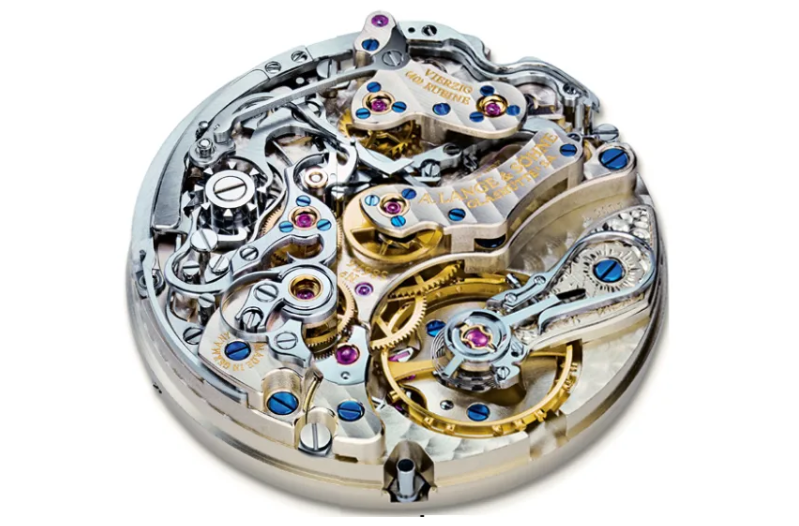
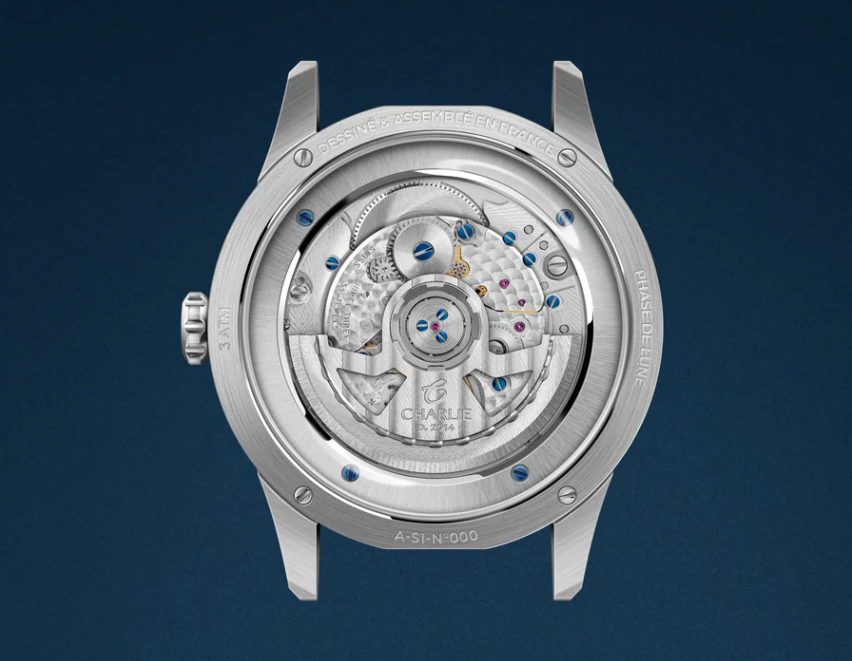

Wristwatch movements are the internal mechanisms that power a watch and control how it keeps time. The movement determines the watch's accuracy, maintenance needs, craftsmanship level, and overall value. There are four main categories of watch movements: mechanical (manual), automatic, quartz, and hybrid movements.
Mechanical Movements (Manual Wind)
 Mechanical movements are the oldest type of watch movement, dating back hundreds of years. They operate entirely through mechanical components, without batteries or electronics. The wearer must manually wind the watch regularly to keep it running.
How It Works
When you turn the crown:
- You tighten a mainspring
- The mainspring slowly releases energy
- That energy moves gears and powers the watch hands
- A component called the escapement regulates the timing
Adventages
- No battery required
- Highly respected craftsmanship
- Smooth sweeping second hand
- Long lifespan if maintained
Disadventages
- Requires regular manual winding
- Less accurate than quartz
- Needs periodic servicing
Automatic Movements (Self-Winding Mechanical)
 Automatic movements are a type of mechanical movement that wind themselves using the motion of the wearer's wrist. They do not require manual winding under normal use.
How it works
Inside the watch is a component called a rotor:
- The rotor spins as your wrist moves
- This motion winds the mainspring automatically
- The watch continues running as long as it is worn regularly
Advantages
- No battery required
- Convenient self-winding
- Traditional mechanical craftsmanship
- Smooth second hand movement
Disadvantages
- Can stop if not worn for several days
- More expensive than quartz
- Requires servicing every few years
Quartz Movements
 Quartz movements are powered by a battery and regulated by a quartz crystal.
They are the most common type of movement today due to their accuracy and affordability.
Quartz movements are powered by a battery and regulated by a quartz crystal.
They are the most common type of movement today due to their accuracy and affordability.
How It Works
- A battery sends electricity through a quartz crystal
- The crystal vibrates at a precise frequency (32,768 times per second)
- These vibrations regulate the movement of the watch hands
Advantages
- Extremely accurate
- Low maintenance
- Affordable
- Lightweight
- Battery lasts 1-3 years
DisAdvantages
- Requires battery replacement
- Less traditional craftsmanship
- Second hand usually ticks instead of sweeping